Seleções
Catar
A seleção do Catar, que se classificou por sediar a Copa do Mundo, vai pra sua primeira participação no maior torneio de futebol do planeta. Honestamente, os donos da casa não devem assutar os seus adversários, já que não contam com nenhum grande nome em seu elenco, acredito que devam ficar em útimo no difícil Grupo A, e duvido até que consigam somar algum ponto.
Curiosidades
Uma curiosidade sobre os donos da casa é que o jogador ex-Corinthians Emerson Sheik já atuou pelo Catar poucas vezes, porém nunca marcou um gol.

Equador
Os equatorianos vêm muito motivados para essa copa após apresentarem um ótimo futebol nas Eliminatórias, conseguindo arrancar pontos das 3 grandes seleções da América do Sul: Brasil e Argentina e Uruguai. Os jogadores talvez possam sentir falta da sensacional festa que faz a torcida equatoriana nos estadios, esse é um ponto que pode pesar contra. Para mim, essa é uma das seleções que podem surpreender a todos nessa Copa.
Curiosidades
A Seleão Equatoriana, apesar de sua classificação até tranquila nas Eliminatórias, quase ficou fora dessa copa. O motivo seria uma suposta irregularidade nos documentos de Bryan Castillo. A Federação Chilena de Futebol foi até a FIFA e pediu que os 2 pontos perdidos diante do Equador fossem somados para os chilenos, porém sem sucesso.
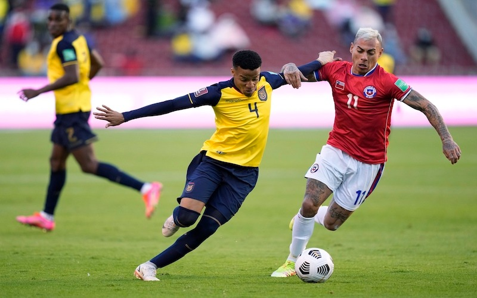Holanda
Os holandeses estão de volta!!! Após ficarem de fora da última Copa, a Holanda volta com uma seleção bem diferente daquela que ficou com o terceiro lugar em 2014 e com o vice em 2010. Eles já não contam mais com nomes como Arjen Robben, Wesley Sneijder (carrasco brasileiro em 2010) e Robin van Persie. Apesar de não parecerem tão talentosos quanto seus antecessores, a nova geração holandesa conta com alguns bons jogadores, sendo Virgil van Dijk o principal deles.
Curiosidades
No dia 10 de outubro de 2017, a Seleção Holandesa foi em busca de um milagre: vencer a Suécia por 7 gols de diferença para se classificar para a Copa do Mundo 2018. E se essa tarefa parecia impossível, a Holanda mostrou que realmente era, só conseguiram fazer um 2x0 nos suecos e ficaram fora da Copa.
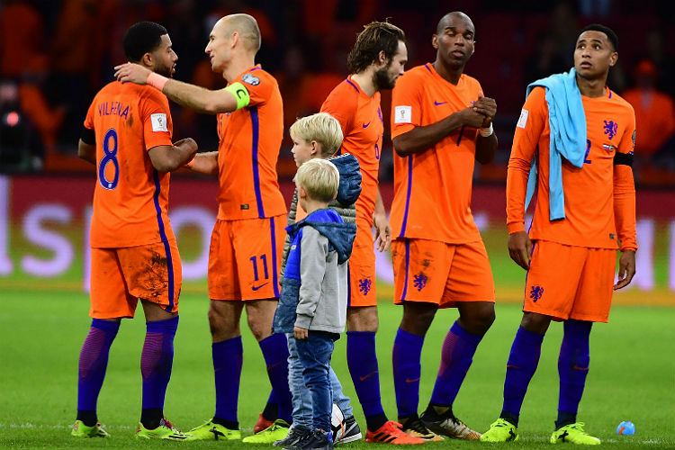Senegal
A Seleção Senegalesa vai para o Catar disposta a surpreender com a gigantesca colaboração do craque recém transferido ao Bayern de Munique, Sadio Mané. A classificação veio após uma classificação nos pênaltis diante do Egito, do craque Mohamed Salah, que na época ainda era companheiro de time de Mané, ambos atuavam pelo vice campeão da Champions League, Liverpool.
Curiosidades
A seleção de Senegal fará sua terceira participação em Copas, e a mais marcante delas até então foi a primeira, em 2002, competição em que os senegaleses conseguiram chegar até as oitavas, após vencer a França, empatar com Uruguai e Dinamarca na frase de grupos e ficar com uma surpreendente segunda colocação no grupo.
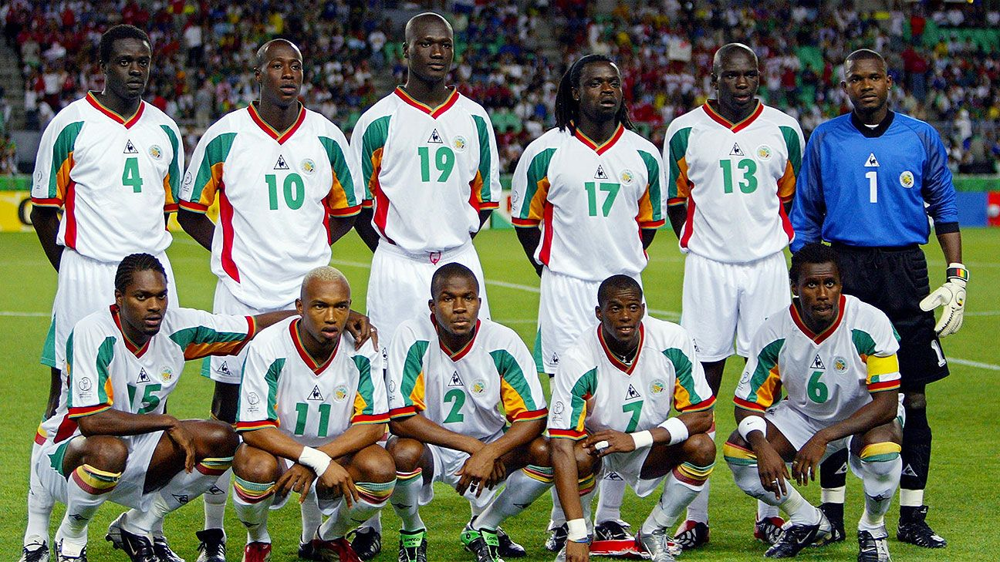Inglaterra
A tradicional porém não muito gloriosa Seleção Inglesa vem pra essa Copa com um time recheado de jovens jogadores, porém o principal jogador inglês é o experiente Harry Kane, que vai em busca do seu primeiro título em toda carreira. Podemos destacar também o lateral direito Alexander Arnold, que é considerado por muitos o melhor jogador da posição no mundo. Acredito que os ingleses podem sim ganhar essa Copa, mas algumas seleções estão em melhor fase.
Curiosidades
O único título da Copa do Mundo que os ingleses conquistaram é marcado por uma gigantesca polêmica. Aos 11 minutos do primeiro tempo da prorrogação da final da Copa de 1966 entre Inglaterra x Alemanha Ocidental, o jogador inglês Geoff Hurst chutou no travessão e a bola quicou sem ultrapassar a linha, mas não foi isso que o árbitro Gottfried Vienst viu quando validou o gol. Os ingleses ainda marcariam mais uma vez e ganhariam por 4x2.
Irã
A Seleção Iraniana vem pra sua terceira participação consecutiva na Copa e tenta pela primeira vez passar da fase de grupos, porém essa tarefa não será nada fácil, já que o Irã conta com a companhia das seleções britânicas da Inglaterra e do País de Gales, além da decente seleção estadunidense. O Irã não conta com nenhum nome de grande peso em seu plantel, o que não impediu eles de se classificarem até com certa tranquilidade.
Curiosidades
Após a Revolução de 1979, o futebol no país foi bastante negligenciado devido à incessante guerra contra o Iraque, o resultado disso: eles desistiram de participar das Eliminatórias para a Copa do Mundo de 1982 e também se recusaram a jogar a Copa de 1986, pois não queriam jogar em campo neutro, o que era visto pela FIFA como medida de segurança, tendo em vista os incessantes conflitos que ocorriam no país.
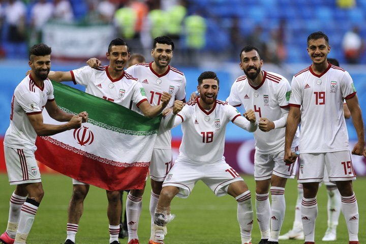Estados Unidos
Os estadunidenses estão de volta à Copa após não conseguirem garantir sua passagem para a Russia em 2018 (não fizeram falta nenhuma). Enfim, a seleção dos Estados Unidos tem como principal esperança o craque do Chelsea Christian Pulisic (talvez um dos poucos jogadores bons nascidos em solo estadunidense). Enfim, acredito que eles teriam mais chances se a bola fosse oval.
Curiosidades
A Seleção Estadunidense protagonizou o primeiro jogo internacional realizado fora do Reino Unido, em 1884 os Norte-Americanos Estados Unidos e Canadá se enfrentaram e o jogo terminou com derrota dos Yankees (como sempre), o jogo terminou 1x0 pro Canadá.
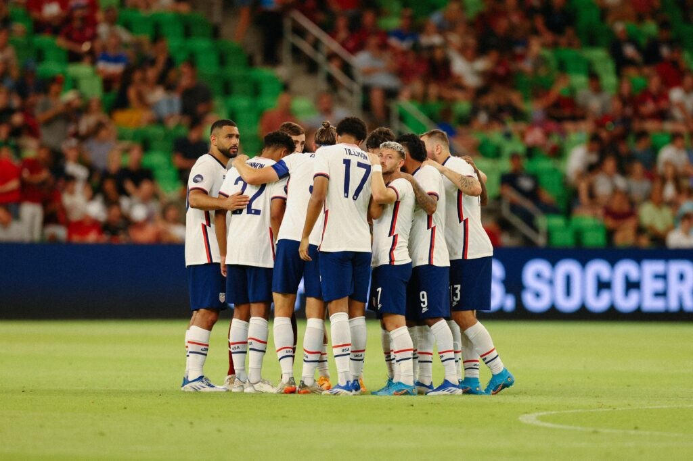País de Gales
Após um gigantesco jejum de 64 anos, os galeses voltam à uma Copa do Mundo tendo como principal esperança o craque e cinco vezes campeão da maior competição de clubes do mundo, Gareth Bale. Apesar do craque galês passar longe de viver sua melhor fase, ele ainda pode jogar aquilo que sabe nessa Copa. A seleção do País de Gales tem boas chances de classificação nesse Grupo B, tendo em vista que seu principal adversário na luta pelo segundo lugar será os Estados Unidos, já que a Inglaterra não deve ter muita dificuldade para passar em primeiro.
Curiosidades
Em 2011, o então treinador da Seleção Galesa Gary Speed foi encontrado enforcado na garagem de seu apartamento em Chester, na Inglaterra. Nunca foi descoberto o real motivo da morte de Gary, alguns falam em suícidio, outros em briga conjugal, porém nunca se soube ao certo o que levou à morte do ex-treinador.

Argentina
Os """hermanos""" vêm bastante motivados para essa Copa do Mundo após (infelizmente) ganharem a Copa América em cima do Brasil, no maior clássico entre seleções do planeta. Talvez a Seleção Argentina venha mais forte pra essa Copa do que veio ao Brasil, em 2014, quando ficaram com o vice campeonato. O fortíssimo plantel conta com aquele que é um dos melhores jogadores da história (ou o melhor, para alguns), Lionel Messi, além de ótimos nomes como Ángel di María, Paulo Dybala, Lautaro Martínez, além do promissor Julian Álvarez.
Curiosidades
Se você acha que o segundo título mundial argentino é polêmico, por conta do famoso gol de mão de Maradona, é porque não conhece a história do primeiro título. Muitas dessas polêmicas que cercam o título da Copa de 1978 são em função da sangrenta ditadura militar que deixou mais de 30 mil pessoas desaparecidas. Para começar, os argentinos jogaram todos os jogos em Buenos Aires, enquanto as outras seleções tinham que viajar por todo o país, e isso passa longe de ser o maior absurdo que aconteceu. Naquela época as semifinais eram disputadas em dois grupos de quatro times, um desses grupos era formado por Brasil, Argentina, Peru e Polônia. Pois bem, a maior polêmica dessa fase está no jogo entre Argentina e Peru, onde os hermanos precisavam fazer 4 gols de diferença pra eliminar o Brasil e ir pra final. O goleiro da seleão peruana, afirmou, em 1998 ao jornal "La Nación", que o presidente argentino Jorge Videla e outros militares argentinos visitaram a concentração peruana antes do jogo, ele afirmou também que o zagueiro Rodolfo Manzo foi jogar no futebol argentino após o jogo. O resultado do jogo? Vitória da Argentina por 6x0, que se classificou pra final e eliminou a então seleção tri-campeã do mundo, Brasil.
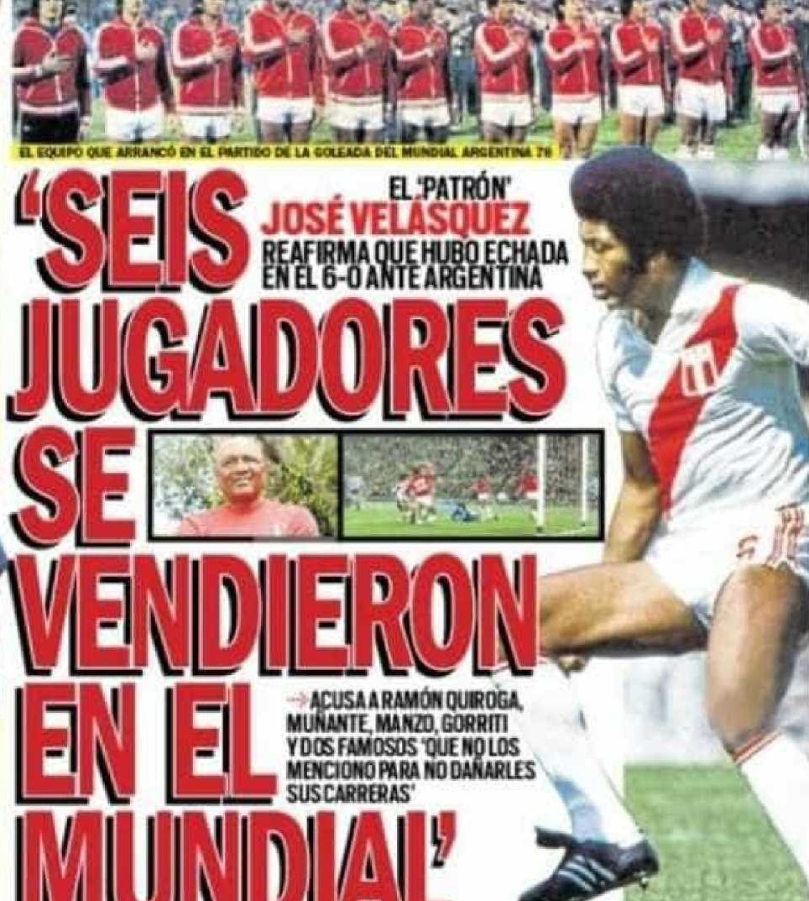Arábia Saudita
A fraquíssima Seleção Saudita vem pra essa Copa sem muitas esperanças de fazer uma boa campanha, e já seria um milagre se os sauditas conseguissem ao menos um ponto no forte Grupo C. Os sauditas não possuem nem ao menos um nome de destaque, todos os jogadores da seleção são bem desconhecidos em âmbito internacional. Pra tristeza deles, não é possível investir todo o sujo dinheiro deles em uma seleção mais forte.
Curiosidades
A Seleção Saudita participou da sua primeira Copa do Mundo em 1994, quando conseguiram chegar nas oitavas de final, campanha que é a melhor da história deles. Em 2002, a Arábia Saudita coneguiu a façanha de ficar com a trigésima segunda colocação geral naquela Copa, a pior campanha daquela edição.
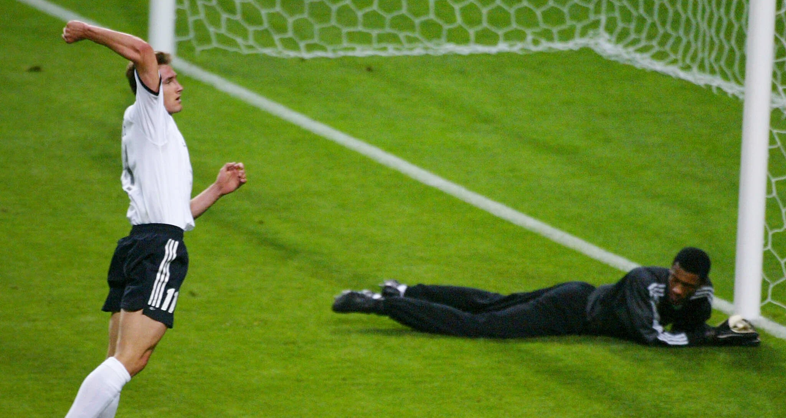México
"Jogamos como nunca, perdemos como sempre", talvez essa seja a frase que melhor defina a quase boa Seleção Mexicana, que quase eliminou a Holanda em 2014, que quase eliminou o Brasil em 2018, num jogo dificílimo apesar do placar de 2x0. E se tem Seleção Mexicana em Copa do Mundo, tem o goleiro Guillermo Ochoa (sim, ele ainda joga), jogador que você só escuta falar de 4 em 4 anos.
Curiosidades
O México foi desclassificado da Copa de 1990 por usar jogadores acima da idade permitida pela FIFA na fase de classificação pra Copa do Mundo Sub-20. Após essa desclassificação, o México participou initerruptamente de todas as Copas seguintes, porém caiu nas oitavas de final em todas elas, instalando a "Maldição do Quinto Jogo", pois os mexicanos jamais disputaram mais que quatro jogos na Copa após 1990.

Polônia
A Seleção Polonesa vem pra essa Copa tendo como principal esperança o craque e duas vezes melhor jogador do mundo Robert Lewandowski. A briga dos polacos deverá ser pelo segundo lugar junto com os mexicanos, porém acredito que eles devam perder essa disuputa.
Curiosidades
A Polônia já ficou duas vezes em terceiro lugar na Copa do Mundo, em 1974 e 1982, porém hoje em dia os poloneses passsam bem longe do sucesso que tiveram nessa época. A Seleção Polonesa também tava naquele polêmico grupo da semifinal de 1978, que já foi citado anteriormente.
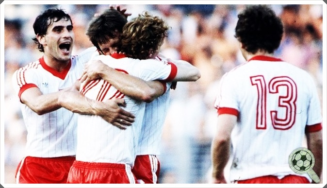França
A França vem com um verdadeiro esquadrão pra essa Copa, com um poderosíssimo ataque que conta com Kylian Mbappé, Karim Benzema e Antonie Griezmann, os atuais campeões vêm pra buscar seu segundo título seguido e seu terceiro no total. Apesar do excelente time, a França não vem se dando bem nos últimos jogos, tendo uma derrota e um empate contra a Croácia, uma derrota contra a Dinamarca e um empate contra a Áustria.
Curiosidades
Os franceses, que tinham acabado de ser campeões em 1998, foram com status de favoritos pra Copa de 2002 (situação bem parecida com a atual), porém o desempenho dos Bleus foi decepcionante. A França saiu daquela Copa sem nem sequer marcar um gol e foram eliminados na primeira fase. Tomara que aconteça o mesmo com essa França e que o campeão seja o mesmo daquela Copa.

Austrália
Os australianos vêm pra sua quinta participação seguida em Copas do Mundo na expectativa de conseguir passar da fase de grupos, feito que eles só atingiram em 2006. Podemos dizer que as perspectivas de classificação da Austrália são relativamente boas, porém eles terão pela frente a decente Seleção Dinamarquesa, que vem com a moral lá em cima após ganhar da atual campeã do mundo, França, confronto esse que irá se repetir nesse difícil grupo.
Curiosidades
A primeira tentativa da Áustralia de ir à Copa foi em 1966, quando a FIFA decidiu concentrar as vagas nos times europeus e sulameircanos, sendo assim, os australianos tiveram que disputar a vaga em um playoff contra a Coreia do Norte, que até então não era reconhecida por muitos países, inclusive o Reino Unido, que sediou aquela Copa. Pois bem, o playoff aconcetceu em Camboja, forte aliado político dos norte-coreanos na época. Como se não bastasse isso, houve uma pressão política pra que a Áustralia cedesse seu lugar para a Coreia, o que aconteceu.
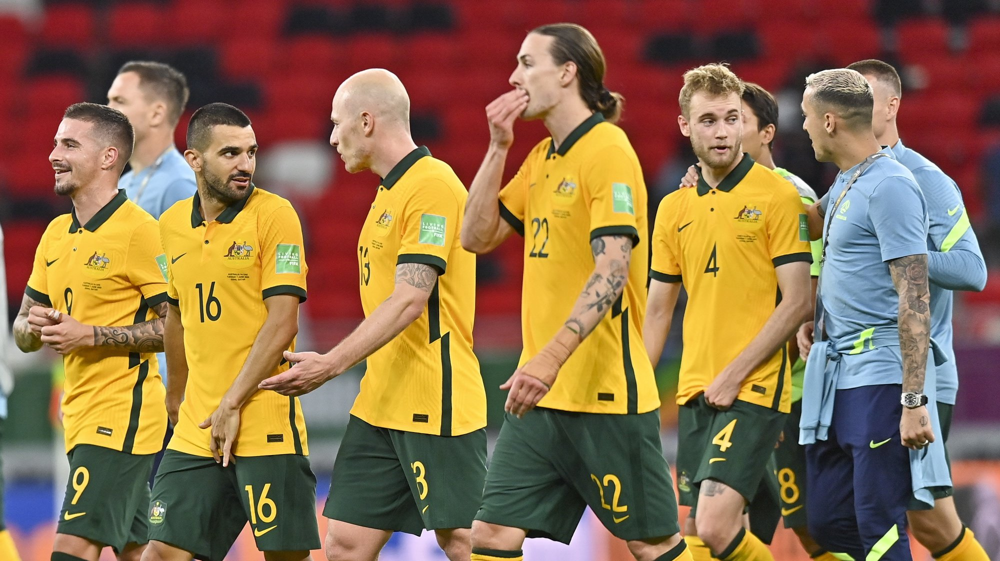Dinamarca
Comandada pelo craque Christian Eriksen, a Seleção Dinamarquesa vêm forte pra essa Copa, pois, como citado anteriormente, eles venceram a atual campeã do mundo, a França. Acredito que essa seleção é uma das que mais têm potencial pra surpreender nessa Copa do Mundo, podendo até, quem sabe, "roubar" o primeiro lugar no grupo dos franceses.
Curiosidades
Talvez você já tenha escutado alguém chamar a Dinamarca de "Dinamáquina", mas você sabe de onde vem esse apelido? Pois bem, esse apelido vem da Copa de 1986, que foi a primeira aparição dinamarquesa em Copas, onde eles venceram os três jogos da primeira fase, incluindo um 2x0 em cima da Alemanha e um histórico 6x1 pra cima do Uruguai. Mas a Dinamáquina parou por aí mesmo, na segunda fase eles sofreram uma inesperada goleada da Espanha, vitória dos espanhóis por 5x1.
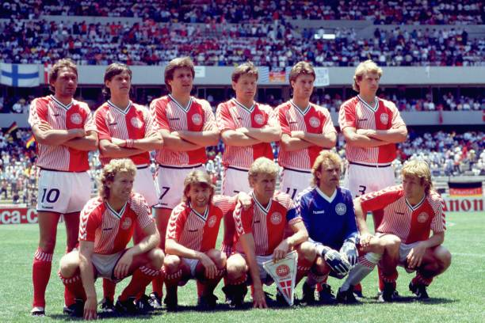Tunísia
A Seleção Tunisiana vem pra sua sétima participação em Copas do Mundo sem nenhuma perspectiva de ao menos passar da primeira fase, talvez o único jogo em que eles tenham alguma chance seja contra a Áustralia, já que as primeiras colocações desse grupo devem ficar com França e Dinamarca. Mas como todos nós sabemos, o futebol é extremamente imprevisível, quem sabe não pode pintar uma zebra por aí.
Curiosidades
A primeira participação dos tunisianos em Copas foi em 1978, onde eles caíram em um grupo que contava as fortes seleções da Alemanha Ocidental e Polônia, além da modesta Seleção Mexicana. A campanha da Tunísia foi surpreendente de uma certa forma, já que conseguiram arrancar um empate dos alemães e conseguiram vencer os mexicanos, se tornando a primeira seleção africana a vencer um jogo em Copas do Mundo.
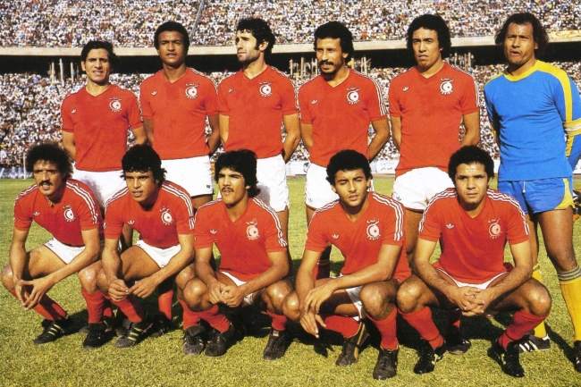Espanha
A Seleção Espanhola vem pra essa Copa com um elenco muito diferente daquele que ganhou a Copa em 2010, porém passou vergonha em 2014, onde tomaram um sonoro 5x1 pra Holanda e caíram na fase de grupos, e em 2018, onde caíram pra dona da casa Rússia nos pênaltis. A Espanha aposta suas fichas nos jovens jogadores do Barcelona, Gavi e Pedri (esse que já ganhou o prêmio Golden Boy uma vez). Enfim, a Espanha deve passar da fase de grupos, porém não acho que eles irão muito mais longe que isso.
Curiosidades
O apelido "Fúria" da Seleção Espanhola foi dado pelos italianos nas Olimpíadas de 1920, que até então era o principal torenio de futebol do mundo. A imprensa italiana chamou a Espanha de "Furia Rossa", ou "Fúria Vermelha", apelido que hoje em dia é reduzido a apenas Fúria. Esse apelido foi ulitizado por muitos anos como chacota nas derrotas espanholas, até aparecer a fantástica seleção de Vicente del Bosque, que encantou o mundo com seu excelente futebol.
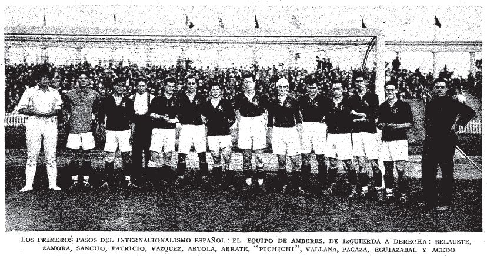Costa Rica
Com Keylor Navas no gol, que certamente foi um dos melhores goleiros da última década, a Seleção Costarriquenha vem pra tentar passar (novamente) de um grupo complicadíssimo, que conta com Espanha e Alemanha, além da tradicional Seleão Japonesa. A Costa Rica vem sendo presença constante na Copa do Mundo, já que desde 2002, eles apenas não garantiram passagem pra África do Sul, em 2010.
Curiosidades
Certamente um dos momentos mais memoráveis da fase de grupos da Copa de 2014 foi a surpreendente classificação em primeiro lugar da Costa Rica no grupo da morte, que contava com Itália, Inglaterra e Uruguai. Os costarriquenhos venceram o Uruguai por 3x1 e a Itália por 1x0, além de empatarem com a Inglaterra por 0x0. Eles ainda passaram pela Grécia nos pênaltis nas oitavas e foram eliminados fazendo jogo duro pra cima da Holanda, que só foi vencer nos pênaltis, após empate por 0x0 no tempo normal. Essa Copa fez os olhares do mundo todo se voltarem para o goleiro Keylor Navas, que seria tri campeão da Champions League pelo Real Madrid após isso.
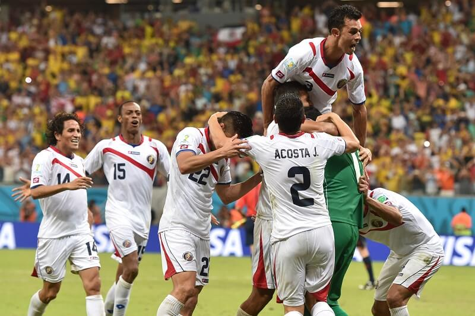Alemanha
Após uma eliminação vexatória na fase de grupos em 2018, a Alemanha vem pra tentar se reconstruir nessa Copa. Com uma mescla da experiência de Manuel Neuer e Thomas Müller e a juventude de Kai Havertz, os alemães irão tentar não passar a mesma vergonha que passaram em 2018, porém terá um grupo complicado pela frente. Acredito que assim como a Espanha, a Alemnha deverá passar sem muita facilidade, porém não avançará muito mais que isso.
Curiosidades
A Seleção Alemã, após a Segunda Guerra Mundial, foi divida em Alemanha Ocidental e Alemanha Oriental. A Alemnha só foi adotar um uniforme reserva em 1950, e a cor escolhida foi o verde, escolha essa que é cercada por mitos até hoje. Uns dizem que foi uma homenagem à Irlanda, que supostamente seria a primeira seleção que aceitou jogar com os alemães após a guerra, porém isso não é verdade, já que o primeiro adversário alemão foi A Suíça. Outros dizem que por falta de verba, a Seleção Alemã reaproveitou os uniformes dos irlandeses. Porém o real motivo é que verde era a cor do distintivo da Federação Alemã de Futebol.
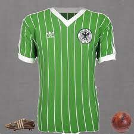Japão
A tradicional Seleção Japonesa tentará nessa Copa passar pelo difícil Grupo E, e para isso, os japoneses certamente precisarão da ajuda do lateral direito Takehiro Tomiyasu, que atualmente joga no Arsenal. Outro jogador que se tinha muita expectativa era o ponta Takefusa Kubo, que acaba de voltar ao Real Madrid, após ser emprestado ao Mallorca, porém ele ainda não vingou.
Curiosidades
Os Samurais Azuis, como é conhecida a Seleção Japonesa, jamais conseguiram avançar além das oitavas de final, eles foram eliminados nessa altura da competição por duas vezes. Outro fato curioso é que os Japoneses já disputaram a Copa América como convidados, juntamente com o Catar, em 2019, eles inclusive chegaram a jogar no Mineirão.
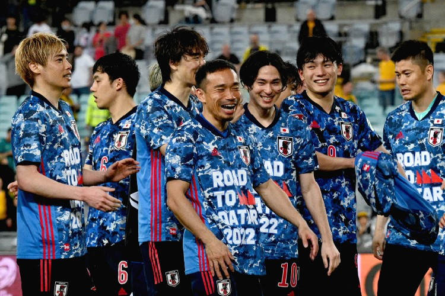Bélgica
A Geração Belga, que muitas vezes foi até motivo de piada por não conseguir chegar tão longe quanto se espera deles, vem forte mais uma vez nessa Copa. Tendo o melhor goleiro do mundo na última temporada Thibaut Courtois, além do craque Kevin de Bruyne e dos em baixa Eden Hazard e Romelu Lukaku, a Bélgica vem pra tentar conquistar o título inédito.
Curiosidades
A Seleção Belga leva o apelido de Diabos Vermelhos (que curiosamente também é o apelido do Manchester United, que é chamado de "Red Devils"), apelido esse que foi dado em 1906 pelo jornalista Pierre Walckiers, quando os belgas derrotaram a Holanda por 3x0, partida que foi disputada em Rotterdam, e desde então os torcedores e a mídia chamam a Bélgica por esse nome.
.jpg)
Canadá
Tendo como principal jogador o lateral esquerdo do Bayern de Munique Alphonso Davies, os canadenses estão de volta à Copa após 36 anos, e terão que surpreender as fortes seleções da Bélgica e Croácia se quiserem passar da fase de grupos pela primeira vez em sua história.
Curiosidades
O primeiro jogo oficial da Seleção Canadense foi disputado no dia 7 de junho de 1924 em uma excursão pela Austrália, e terminou em derrota por 3x2 para os donos da casa.
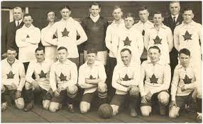Marrocos
A Seleção Marroquina, assim como os canadenses, busca surpreender Bélgica e Croácia nesse Grupo F, porém essa tarefa será praticamente impossível. A seleção de Marrocos até conta com alguns jogadores que jogam no futebol europeu, como o lateral direito do Paris Saint-Germain Achraf Hakimi, porém acredito que não deverá ser suficiente para evitar uma desclassificação na fase de grupos.
Curiosidades
A exemplo da Costa Rica em 2014, os marroquinos também conseguiram uma surpreendente classificação em um difícil grupo, só que isso aconteceu na Copa de 1986. A seleção de Marrocos passou em primeiro lugar em um grupo com Inglaterra, Polônia e Portugal, com dois empates por 0x0 contra Polônia e Inglaterra, e uma vitória por 3x1 pra cima de Portugal. Porém eles pararam por aí, nas oitavas os marroquinos foram derrotados por 1x0 pra Alemanha Ocidental.
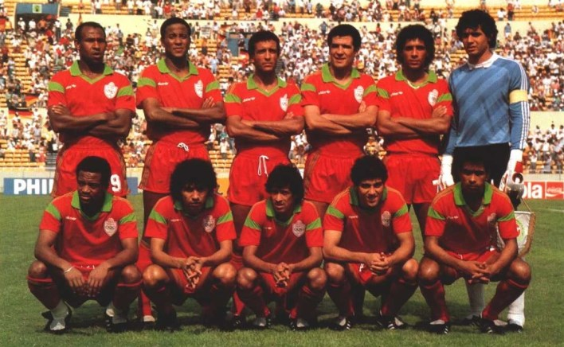Croácia
A atual vice campeã do mundo vai pro Catar tentando repetir o feito obtido na Rússia em 2018, e para isso conta com o gênio penta campeão da Champions League Luka Modric. Porém repetir o feito de 2018 será algo extremamente difícil, já que os croatas terão muitas boas seleções pelo caminho, uma delas já na fase de grupos, a Bélgica. Acredito que eles possam até surpreender os belgas e arrancar o primeiro lugar do Grupo F.
Curiosidades
A segunda melhor participação croata em Copas do Mundo foi em 1998, na França, onde eles conseguiram um digno terceiro lugar, derrotando inclusive a Alemanha nas quartas de final e perdendo pros donos da casa na semi final, por 2x1, com dois gols de Lilian Thuram, que jamais havia marcado um gol pela seleção.
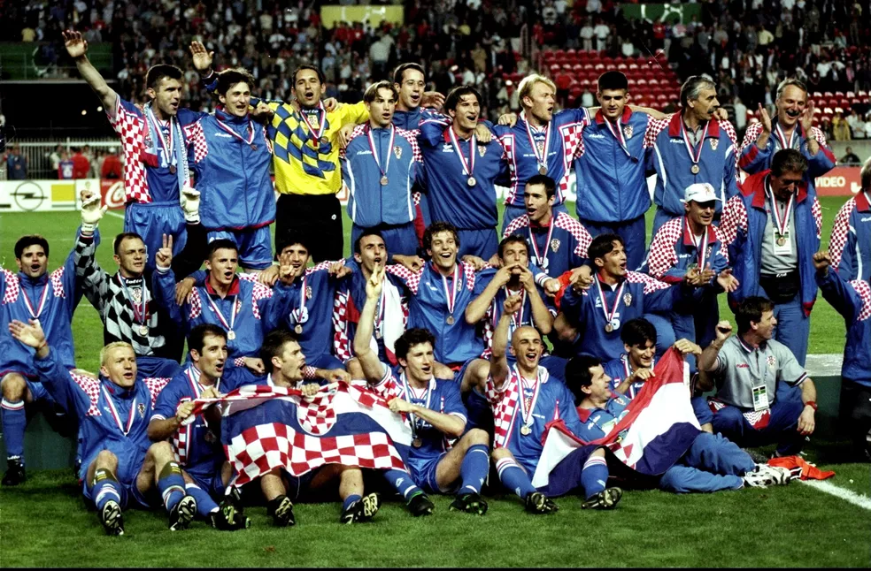Brasil
A maior seleção do mundo vem rumo ao hexacampeonato novamente botando fé no gênio Neymar Jr, porém ele terá ajuda dos jovens Vinicius Junior (principal jogador brasileiro na última temporada), Raphinha, Lucas Paquetá e Antony, além dos experientes Casemiro, Thiago Silva e Marquinhos. Acredito que essa seleção pode sim trazer o hexa pra casa dessa vez.
Curiosidades
A polêmica Copa de 1978, que já foi citada anteriormente, ainda guarda mais uma história triste de certa forma. A seleção daquele ano era recheada de craques, como Zico e Reinaldo (que será o principal personagem dessa história), que eram os dois maiores jogadores brasileiros daquela geração. Reinaldo era, sem dúvidas, um dos principais nomes da oposição à ditadura militar que cercava toda a América Latina na época, fazendo o gesto do punho cerrado em suas comemorações, gesto esse que é símbolo dos Panteras Negras. O Rei não tinha tantas oportunidades na seleção, e foi convocado pra Copa de 1978 por causa da gigantesca pressão que foi feita para que ele fosse chamado, especialmente da torcida do Atlético. Antes de embarcar pra Argentina, o presidente brasileiro Ernesto Geisel disse ao craque que não era pra ele falar de política, pois disso eles cuidavam, fala essa que deixou Reinaldo extremamente assustado, o treinador brasileiro Cláudio Coutinho disse para que o atacante não comemorasse com o punho cerrado na Copa. Pois bem, na estréia contra a forte Seleção Sueca, o Brasil saiu perdendo, mas logo empatou com gol de Reinaldo, que após alguns segundos de hesitação, levantou o punho cerrado em um país que atravessava uma ditadura que matou mais de 30.000 pessoas. Após isso, o craque jamais voltaria a atuar pela seleção, gerando reclamação até de Zico. Chegando no hotel após o jogo, Reinaldo recebeu um envelope com remetente da Venezuela. Era um relatório da Operação Condor, que revelava como eram planejados os assasinatos aos líderes opositores às ditaduras. Esse envelope revelava, inclusive, que havia sido planejada a morte do ex-presidente brasileiro Juscelino Kubitschek, que teve o carro sabotado.
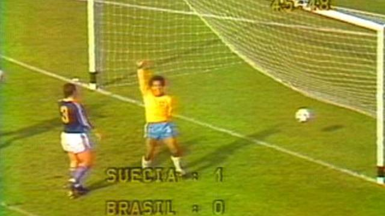Sérvia
Botando fé no goleador da Juventus Dušan Vlahović, a Sérvia vem pra brigar pelo segundo lugar juntamente com a Suíça nesse Grupo G. Os sérvios se classificaram para a Copa de forma bem tranquila, ficando 11 pontos na frente do terceiro colocado do Grupo A das Eliminatórias.
Curiosidades
A primeira Copa disputada pela Sérvia como seleção independente foi em 2010, já que antes eles disputavam como Seleção Servo-Montenegrina e anteriormente como Seleção Iugoslava. Apesar da viória pra cima da forte Seleção Alemã, a Sérvia caiu na fase de grupos dessa Copa.
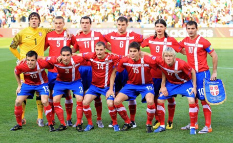Suíça
A mediana Seleção Suíça, que já deu trabalho pro Brasil em 2018, vai ao Catar para tentar ultrapassar a marca do quarto jogo, já que os suíços jamas fizeram mais que quatro jogos em uma edição de Copa do Mundo (vale lembrar que eles chegaram nas quartas em 1954, porém ainda não existiam oitavas de final na Copa, fazendo com que eles não ultrapassassem os quatro jogos).
Curiosidades
Em 2006, a Suíça conseguiu o feito de ser eliminada sem sequer sofrer um gol, com empate por 0x0 contra a França e duas vitórias por 2x0, contra Togo e Coreia do Sul, os suíços foram enfrentar a Ucrânia nas oitavas, e caíram nos pênaltis, após empate por 0x0 no tempo normal.
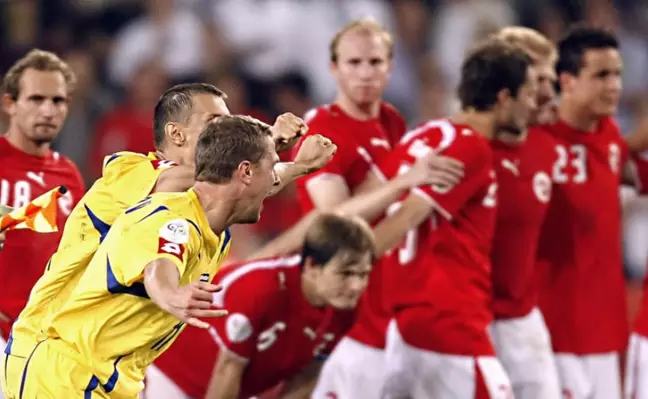Camarões
A tradicional Seleção Camaronesa tem como principais jogadores o goleiro da Inter de Milão André Onana e o volante do Napoli Zambo Anguissa, os camaroneses certamente darão trabalho para as outras seleções do Grupo G, podendo até ficar com o segundo lugar.
Curiosidades
A Copa de 1990 foi marcada como uma das mais chatas da história. Mas apesar disso, a Seleção Camaronesa conseguiu encantar o mundo todo com um futebol alegre. Os Leões Indomáveis (apelido dado em 1982, quando eles saíram da Copa sem perder nenhum jogo) estrearam contra a então atual campeã do mundo, a Argentina, e venceram por 1x0, venceram também a Romênia de Hagi e a Colômbia de Higuita, Rincón e Valderrama. Com o craque Roger Milla no ataque, os camaroneses quase foram às semifinais, fizeram jogo duro diante da Inglaterra, porém alguns erros individuais decretaram a virória dos britânicos por 3x2.
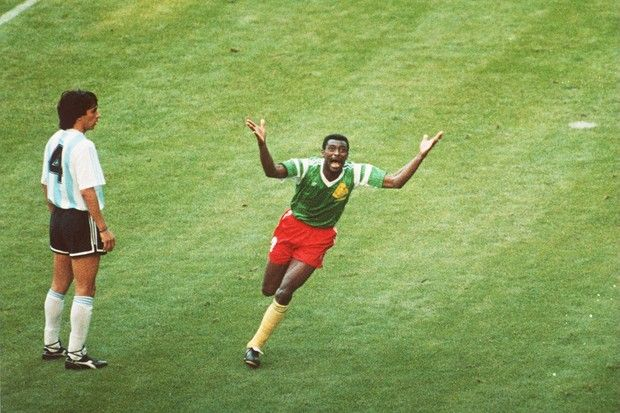Portugal
A Seleção Portuguesa vem pra essa Copa com a gigantesca ajuda da Macedônia do Norte, que eliminou a Itália dos playoffs das Eliminatórias, em um jogo histórico. Confiando no Cristiano Ronaldo, certamente um dos maiores jogadores da história que provavelmente estará fazendo sua última Copa, Portugal vai pro Catar sem tanta badalação. Isso acontece por conta do mediano futebol apresentado pelos portugueses nos jogos recentes.
Curiosidades
Hoje em dia, a Seleção Portuguesa é até respeitada de certa forma, porém nem sempre foi assim. Na disputa pela vaga pro Mundial de 1934, os portugueses levaram uma sonora goleada para a Espanha por incríveis 9x0. 16 anos depois, os portugueses seriam goleados mais uma vez pelos espanhóis, dessa vez por "apenas" 5x1. O primeiro grande feito dos portugueses foi em 1958, quando derrotaram a "Squadra Azzura" (como a Itália é chamada até hoje) por 3x0.
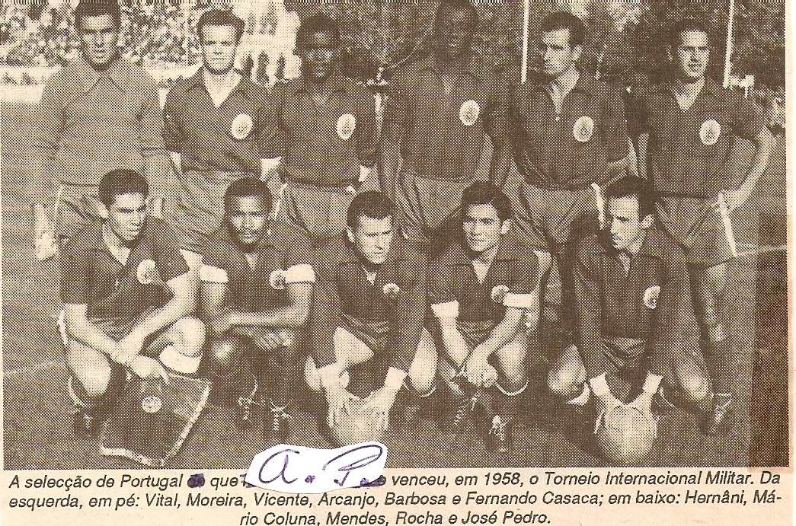Gana
Os ganeses vêm pra essa Copa com a difícil missão de superar Portugal e Uruguai para se classificar para as oitavas de final. Sem nenhum nome de grande destaque, a seleção de Gana vai precisar de muita dedicação se quiser sonhar em passar pelo Grupo H.
Curiosidades
A melhor campanha ganesa em Copas é marcada por um dos jogos mais icônicos da Copa de 2010. Eu estou falando de Gana x Uruguai, válido pelas quartas de final daquela Copa. Após empate no tempo normal, a Seleção Ganesa estava quase marcando um gol na prorrogação, mas Luis Suárez impediu o gol botando a mão na bola. O craque uruguaio foi expulso por isso, mas no fim valeu a pena, pois nos pênaltis os urugaios venceram por 4x2, sendo uma das cobranças aquele famoso gol de cavadinha de Loco Abreu.
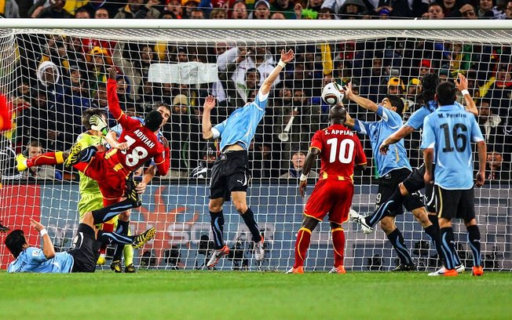Uruguai
Mesclando a experiência de Luisito Suárez e Edinson Cavani e a juventude de Darwin Núñes, recém transferido ao Liverpool, a Seleção Uruguaia vem forte em busca do tricampeonato. Porém acredito que eles devam ficar só na busca mesmo, já que existem muitas outras selções à frente deles.
Curiosidades
No dia 16 de julho de 1950, os uruguaios foram à campo em um Maracanã com 200 mil pessoas para enfrentar os donos da casa. O Brasil até saiu ganhando com gol de Friaça, mas o Uruguai empatou com Schiaffino e virou com Ghiggia, instalando assim o famoso "Maracanazzo". Os torcedores brasileiros completamente desolados, ainda demoraram mais de meia hora para sair do estádio. O Brasil finalizou mais de 31 vezes naquele jogo.
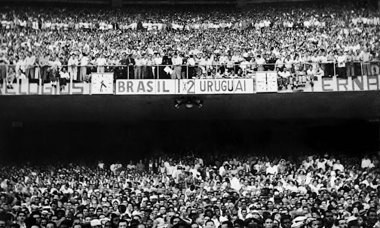Coreia do Sul
Com o craque Heung-min Son no comando do ataque, a Coreia do Sul, vai ao Catar para tentar surpreender Uruguai e Portugal no Grupo H, assim como fez em 2018 contra a Alemanha, mas acredito que o feito obtido na Rússia não deverá se repetir. Se fosse pra arriscar um palpite, eu diria que a Coreia do Sul deverá se contentar com um digno terceiro lugar nesse difícil grupo.
Curiosidades
O primeiro jogo da história da Coreia do Sul foi nos Jogos Olimpícos de 1948, quando venceram o México por 5x3 e, logo em seguida, tomaram um sonoro 12x0 para a Suécia. Os coreanos fizeram sua primeira participação em Copas em 1954, mas foram eliminados de forma vexatória, após perder de 7x0 pra Turquia e de 9x0 pra Hungria.